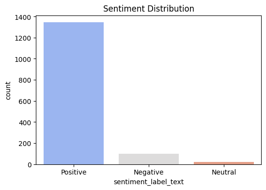
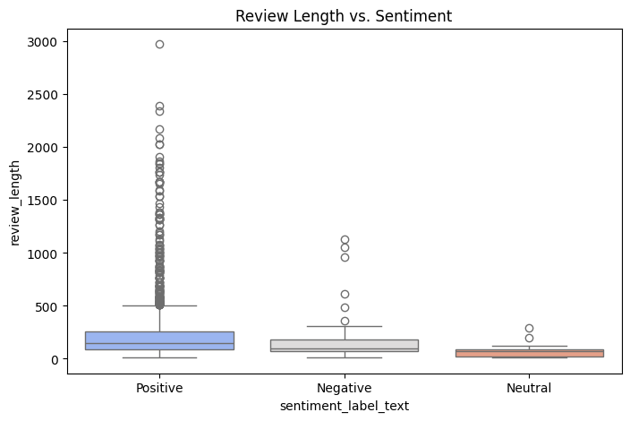
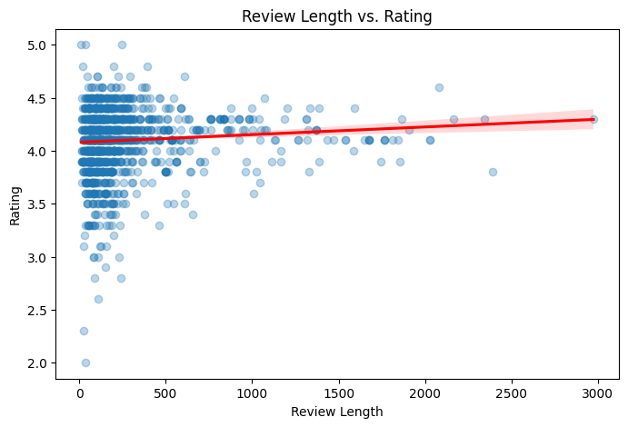
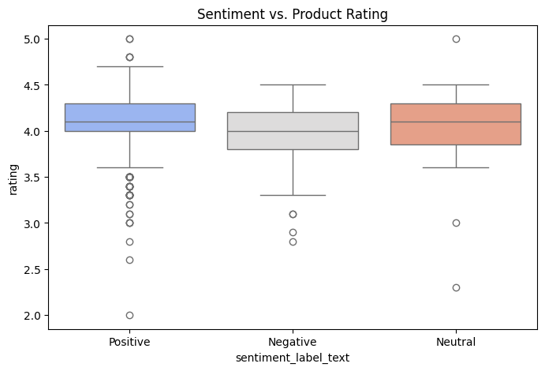
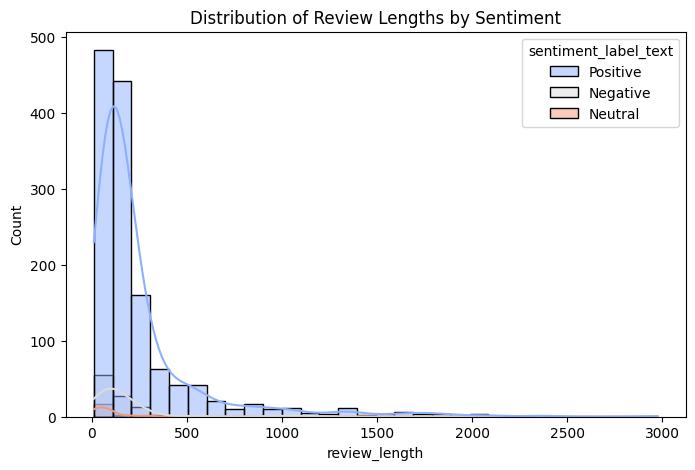
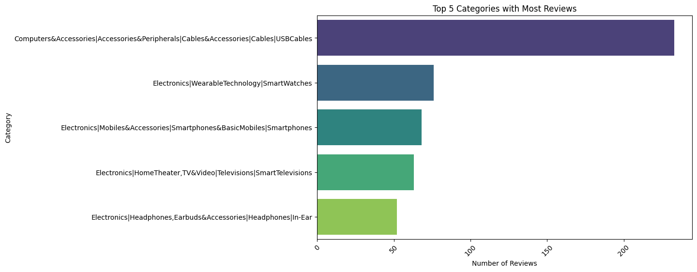
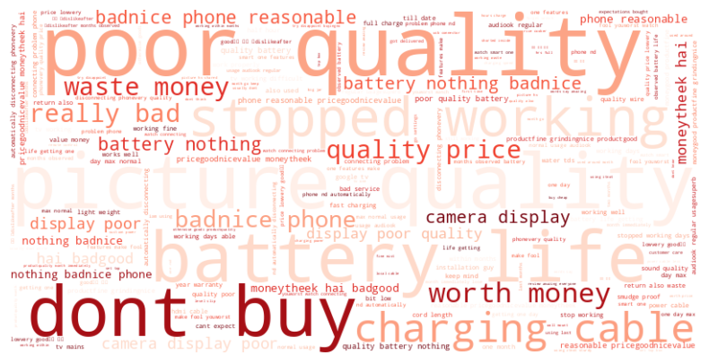
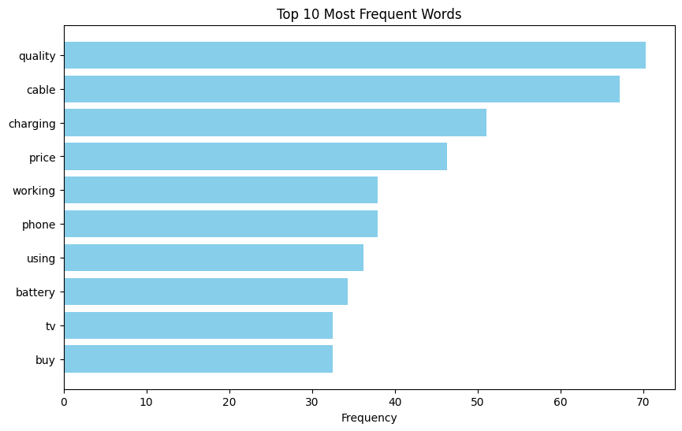

import pandas as pd
import numpy as np
import matplotlib.pyplot as plt
import seaborn as sns
import re
import nltk
from nltk.sentiment import SentimentIntensityAnalyzer
from sklearn.model_selection import train_test_split
from sklearn.linear_model import LinearRegression
from sklearn.metrics import mean_squared_error, r2_score
from google.colab import files
from sklearn.feature_extraction.text import TfidfVectorizer
from sklearn.linear_model import LogisticRegression
from sklearn.metrics import accuracy_score, classification_report
from wordcloud import WordCloud# Load dataset
df = pd.read_csv('/content/amazon.csv')# Display basic info
df.info()
df.head()<class 'pandas.core.frame.DataFrame'>
RangeIndex: 1465 entries, 0 to 1464
Data columns (total 16 columns):
# Column Non-Null Count Dtype
--- ------ -------------- -----
0 product_id 1465 non-null object
1 product_name 1465 non-null object
2 category 1465 non-null object
3 discounted_price 1465 non-null object
4 actual_price 1465 non-null object
5 discount_percentage 1465 non-null object
6 rating 1465 non-null object
7 rating_count 1463 non-null object
8 about_product 1465 non-null object
9 user_id 1465 non-null object
10 user_name 1465 non-null object
11 review_id 1465 non-null object
12 review_title 1465 non-null object
13 review_content 1465 non-null object
14 img_link 1465 non-null object
15 product_link 1465 non-null object
dtypes: object(16)
memory usage: 183.3+ KB| product_id | product_name | category | discounted_price | actual_price | discount_percentage | rating | rating_count | about_product | user_id | user_name | review_id | review_title | review_content | img_link | product_link | |
|---|---|---|---|---|---|---|---|---|---|---|---|---|---|---|---|---|
| 0 | B07JW9H4J1 | Wayona Nylon Braided USB to Lightning Fast Cha... | Computers&Accessories|Accessories&Peripherals|... | ₹399 | ₹1,099 | 64% | 4.2 | 24,269 | High Compatibility : Compatible With iPhone 12... | AG3D6O4STAQKAY2UVGEUV46KN35Q,AHMY5CWJMMK5BJRBB... | Manav,Adarsh gupta,Sundeep,S.Sayeed Ahmed,jasp... | R3HXWT0LRP0NMF,R2AJM3LFTLZHFO,R6AQJGUP6P86,R1K... | Satisfied,Charging is really fast,Value for mo... | Looks durable Charging is fine tooNo complains... | https://m.media-amazon.com/images/W/WEBP_40237... | https://www.amazon.in/Wayona-Braided-WN3LG1-Sy... |
| 1 | B098NS6PVG | Ambrane Unbreakable 60W / 3A Fast Charging 1.5... | Computers&Accessories|Accessories&Peripherals|... | ₹199 | ₹349 | 43% | 4.0 | 43,994 | Compatible with all Type C enabled devices, be... | AECPFYFQVRUWC3KGNLJIOREFP5LQ,AGYYVPDD7YG7FYNBX... | ArdKn,Nirbhay kumar,Sagar Viswanathan,Asp,Plac... | RGIQEG07R9HS2,R1SMWZQ86XIN8U,R2J3Y1WL29GWDE,RY... | A Good Braided Cable for Your Type C Device,Go... | I ordered this cable to connect my phone to An... | https://m.media-amazon.com/images/W/WEBP_40237... | https://www.amazon.in/Ambrane-Unbreakable-Char... |
| 2 | B096MSW6CT | Sounce Fast Phone Charging Cable & Data Sync U... | Computers&Accessories|Accessories&Peripherals|... | ₹199 | ₹1,899 | 90% | 3.9 | 7,928 | 【 Fast Charger& Data Sync】-With built-in safet... | AGU3BBQ2V2DDAMOAKGFAWDDQ6QHA,AESFLDV2PT363T2AQ... | Kunal,Himanshu,viswanath,sai niharka,saqib mal... | R3J3EQQ9TZI5ZJ,R3E7WBGK7ID0KV,RWU79XKQ6I1QF,R2... | Good speed for earlier versions,Good Product,W... | Not quite durable and sturdy,https://m.media-a... | https://m.media-amazon.com/images/W/WEBP_40237... | https://www.amazon.in/Sounce-iPhone-Charging-C... |
| 3 | B08HDJ86NZ | boAt Deuce USB 300 2 in 1 Type-C & Micro USB S... | Computers&Accessories|Accessories&Peripherals|... | ₹329 | ₹699 | 53% | 4.2 | 94,363 | The boAt Deuce USB 300 2 in 1 cable is compati... | AEWAZDZZJLQUYVOVGBEUKSLXHQ5A,AG5HTSFRRE6NL3M5S... | Omkar dhale,JD,HEMALATHA,Ajwadh a.,amar singh ... | R3EEUZKKK9J36I,R3HJVYCLYOY554,REDECAZ7AMPQC,R1... | Good product,Good one,Nice,Really nice product... | Good product,long wire,Charges good,Nice,I bou... | https://m.media-amazon.com/images/I/41V5FtEWPk... | https://www.amazon.in/Deuce-300-Resistant-Tang... |
| 4 | B08CF3B7N1 | Portronics Konnect L 1.2M Fast Charging 3A 8 P... | Computers&Accessories|Accessories&Peripherals|... | ₹154 | ₹399 | 61% | 4.2 | 16,905 | [CHARGE & SYNC FUNCTION]- This cable comes wit... | AE3Q6KSUK5P75D5HFYHCRAOLODSA,AFUGIFH5ZAFXRDSZH... | rahuls6099,Swasat Borah,Ajay Wadke,Pranali,RVK... | R1BP4L2HH9TFUP,R16PVJEXKV6QZS,R2UPDB81N66T4P,R... | As good as original,Decent,Good one for second... | Bought this instead of original apple, does th... | https://m.media-amazon.com/images/W/WEBP_40237... | https://www.amazon.in/Portronics-Konnect-POR-1... |
# Drop unnecessary columns based on project plan
columns_to_keep = ['product_id', 'product_name', 'category','discounted_price','actual_price', 'rating', 'rating_count', 'about_product',
'user_id', 'review_id', 'review_title', 'review_content']
df = df[columns_to_keep]# Handle missing values
df.dropna(subset=['review_content', 'rating'], inplace=True)# Add review length column
df['review_length'] = df['review_content'].apply(lambda x: len(str(x).split()))import nltk
nltk.download('stopwords')
from sklearn.feature_extraction.text import ENGLISH_STOP_WORDS[nltk_data] Downloading package stopwords to /root/nltk_data...
[nltk_data] Unzipping corpora/stopwords.zip.import nltk
nltk.download('stopwords')
from nltk.corpus import stopwords # Import stopwords from nltk.corpus
from sklearn.feature_extraction.text import ENGLISH_STOP_WORDS
# Define stopwords
stop_words = set(stopwords.words('english'))
# Add custom stopwords
custom_stopwords = ["product", "like","good","easy","use"] # Add your specific words
stop_words.update(custom_stopwords) # Update stopwords set
# Function to preprocess text
def preprocess_text(text):
text = text.lower() # Lowercase
text = re.sub(r'\d+', '', text) # Remove numbers
text = re.sub(r'[^\w\s]', '', text) # Remove punctuation
tokens = text.split() # Tokenization
tokens = [word for word in tokens if word not in stop_words] # Remove stopwords
return ' '.join(tokens)[nltk_data] Downloading package stopwords to /root/nltk_data...
[nltk_data] Package stopwords is already up-to-date!# Apply preprocessing
df['cleaned_review'] = df['review_content'].astype(str).apply(preprocess_text)reviews = df['cleaned_review']
vectorizer = TfidfVectorizer(min_df=5, max_df=0.8, max_features=5000, stop_words='english')
X = vectorizer.fit_transform(reviews)
# Get the terms (words) and their corresponding term frequencies (TF)
terms = vectorizer.get_feature_names_out()
term_frequencies = X.sum(axis=0).A1 # Sum across all documents
frequency_df = pd.DataFrame(list(zip(terms, term_frequencies)), columns=['Word', 'Frequency'])
frequency_df = frequency_df.sort_values(by='Frequency', ascending=False)
# Display the top 10 most frequent words
print(frequency_df.head(10)) Word Frequency
2519 quality 70.256776
397 cable 67.148906
486 charging 51.103816
2387 price 46.262668
3589 working 37.917501
2267 phone 37.902488
3433 using 36.223175
242 battery 34.270183
3346 tv 32.496618
384 buy 32.475281# Initialize Sentiment Analyzer
nltk.download('vader_lexicon')
sia = SentimentIntensityAnalyzer()[nltk_data] Downloading package vader_lexicon to /root/nltk_data...def get_sentiment(text):
"""Classifies sentiment as Positive, Neutral, or Negative."""
score = sia.polarity_scores(text)['compound']
if score > 0.05:
return 1
elif score < -0.05:
return -1
else:
return 0# Apply sentiment analysis
df['sentiment'] = df['cleaned_review'].apply(get_sentiment)df['cleaned_review'].head(5)| cleaned_review | |
|---|---|
| 0 | looks durable charging fine toono complainscha... |
| 1 | ordered cable connect phone android auto car c... |
| 2 | quite durable sturdyhttpsmmediaamazoncomimages... |
| 3 | productlong wirecharges goodnicei bought cable... |
| 4 | bought instead original apple work rs fast app... |
# Define a mapping dictionary
sentiment_mapping = {1: "Positive", 0: "Neutral", -1: "Negative"}
# Create a new column with mapped sentiment labels
df["sentiment_label_text"] = df["sentiment"].map(sentiment_mapping)
# Display the first few rows
print(df[["sentiment", "sentiment_label_text"]].head()) sentiment sentiment_label_text
0 1 Positive
1 1 Positive
2 1 Positive
3 1 Positive
4 1 Positive# Sentiment distribution
plt.figure(figsize=(6,4))
sns.countplot(x='sentiment_label_text', data=df, palette='coolwarm')
plt.title('Sentiment Distribution')
plt.show()FutureWarning:
Passing `palette` without assigning `hue` is deprecated and will be removed in v0.14.0. Assign the `x` variable to `hue` and set `legend=False` for the same effect.
sns.countplot(x='sentiment_label_text', data=df, palette='coolwarm')
# Review Length vs. Sentiment
plt.figure(figsize=(8,5))
sns.boxplot(x='sentiment_label_text', y='review_length', data=df, palette='coolwarm')
plt.title('Review Length vs. Sentiment')
plt.show()FutureWarning:
Passing `palette` without assigning `hue` is deprecated and will be removed in v0.14.0. Assign the `x` variable to `hue` and set `legend=False` for the same effect.
sns.boxplot(x='sentiment_label_text', y='review_length', data=df, palette='coolwarm')
# Regression Analysis: Review Length vs. Rating
X = df[['review_length']]
# Convert 'rating' to numeric, handling errors, and then drop NaNs
y = pd.to_numeric(df['rating'], errors='coerce').dropna()
# Filter the DataFrame based on the valid ratings in 'y'
df = df[df.index.isin(y.index)]
X = df[['review_length']]
X_train, X_test, y_train, y_test = train_test_split(X, y, test_size=0.3, random_state=42)
model = LinearRegression()
model.fit(X_train, y_train)
y_pred = model.predict(X_test)# Regression Metrics
print("Mean Squared Error:", mean_squared_error(y_test, y_pred))
print("R-squared Score:", r2_score(y_test, y_pred))Mean Squared Error: 0.07705379430653071
R-squared Score: 0.00699365804788743# Plot Regression
plt.figure(figsize=(8,5))
# Ensure 'rating' is numeric before plotting
df['rating'] = pd.to_numeric(df['rating'], errors='coerce')
df = df.dropna(subset=['rating']) # Drop rows with invalid ratings
sns.regplot(x=df['review_length'], y=df['rating'], scatter_kws={'alpha':0.3}, line_kws={'color':'red'})
plt.title('Review Length vs. Rating')
plt.xlabel('Review Length')
plt.ylabel('Rating')
plt.show()
# Sentiment vs. Product Rating
plt.figure(figsize=(8,5))
sns.boxplot(x='sentiment_label_text', y='rating', data=df, palette='coolwarm')
plt.title('Sentiment vs. Product Rating')
plt.show()FutureWarning:
Passing `palette` without assigning `hue` is deprecated and will be removed in v0.14.0. Assign the `x` variable to `hue` and set `legend=False` for the same effect.
sns.boxplot(x='sentiment_label_text', y='rating', data=df, palette='coolwarm')
# Distribution of Review Lengths by Sentiment
plt.figure(figsize=(8,5))
sns.histplot(data=df, x='review_length', hue='sentiment_label_text', bins=30, kde=True, palette='coolwarm')
plt.title('Distribution of Review Lengths by Sentiment')
plt.show()
correlation = df["review_length"].corr(df["rating"])
print(f"Correlation between review length and rating: {correlation:.4f}")Correlation between review length and rating: 0.0787correlation = df["review_length"].corr(df["sentiment"])
print(f"Correlation between review length and sentiment: {correlation:.4f}")Correlation between review length and sentiment: 0.0835#Top 5 categories that has the most review
top_categories = df['category'].value_counts().head(5)
# Display the top 5 categories with the most reviews
print(top_categories)category
Computers&Accessories|Accessories&Peripherals|Cables&Accessories|Cables|USBCables 233
Electronics|WearableTechnology|SmartWatches 76
Electronics|Mobiles&Accessories|Smartphones&BasicMobiles|Smartphones 68
Electronics|HomeTheater,TV&Video|Televisions|SmartTelevisions 63
Electronics|Headphones,Earbuds&Accessories|Headphones|In-Ear 52
Name: count, dtype: int64# Plot the bar chart
plt.figure(figsize=(10, 6))
sns.barplot(x=top_categories.values, y=top_categories.index, palette="viridis")
# Add labels and title
plt.xlabel("Number of Reviews")
plt.ylabel("Category")
plt.title("Top 5 Categories with Most Reviews")
plt.xticks(rotation=45)
plt.show()FutureWarning:
Passing `palette` without assigning `hue` is deprecated and will be removed in v0.14.0. Assign the `y` variable to `hue` and set `legend=False` for the same effect.
sns.barplot(x=top_categories.values, y=top_categories.index, palette="viridis")
print(df["cleaned_review"].isnull().sum())
print(df["cleaned_review"].str.len().sum())
print(df["sentiment"].value_counts())0
1301289
sentiment
1 1344
-1 101
0 19
Name: count, dtype: int64# Filter positive reviews
positive_reviews = df["cleaned_review"].dropna().astype(str)
# Initialize TfidfVectorizer
vectorizer = TfidfVectorizer(min_df=5, max_df=0.8, max_features=5000,ngram_range=(2,3))
# Fit and transform the positive reviews
tfidf_matrix = vectorizer.fit_transform(positive_reviews)
# Get feature names (words) and their corresponding TF-IDF scores
feature_names = vectorizer.get_feature_names_out()
tfidf_scores = tfidf_matrix.sum(axis=0).A1 # Sum TF-IDF scores for each word
# Create dictionary of words and their TF-IDF scores
word_scores = dict(zip(feature_names, tfidf_scores))
# Generate WordCloud
wordcloud = WordCloud(width=800, height=400, background_color="white", colormap="viridis").generate_from_frequencies(word_scores)
# Plot the WordCloud
plt.figure(figsize=(10, 5))
plt.imshow(wordcloud, interpolation="bilinear")
plt.axis("off")
plt.title("Positive Reviews WordCloud (TF-IDF)", fontsize=14)
plt.show()
# Filter negative reviews
negative_reviews = df[df['sentiment'] == -1]['cleaned_review']
# Vectorize the negative reviews using TfidfVectorizer
vectorizer = TfidfVectorizer(max_features=5000, ngram_range=(2, 3))
X = vectorizer.fit_transform(negative_reviews)
# Get the feature names (words/phrases)
feature_names = vectorizer.get_feature_names_out()
# Get the tf-idf scores for each feature (word/phrase)
tfidf_scores = X.sum(axis=0).A1 # Summing scores across all reviews for each feature
# Create a dictionary of words and their corresponding scores
word_scores = dict(zip(feature_names, tfidf_scores))
# Generate the word cloud
wordcloud = WordCloud(width=800, height=400, background_color='white', colormap="Reds").generate_from_frequencies(word_scores)
# Plot the word cloud
plt.figure(figsize=(10, 5))
plt.imshow(wordcloud, interpolation='bilinear')
plt.axis('off')
plt.show()
from sklearn.linear_model import LogisticRegression
# Convert text into numerical vectors using TF-IDF
vectorizer = TfidfVectorizer(max_features=5000)
X = vectorizer.fit_transform(df['cleaned_review'])
y = df['sentiment']
# Split data into training & test sets
X_train, X_test, y_train, y_test = train_test_split(X, y, test_size=0.3, random_state=42)
# Train a Logistic Regression model
model = LogisticRegression(class_weight='balanced', random_state=42)
model.fit(X_train, y_train) # Model now gives equal importance to all classes
# Predict sentiment
y_pred = model.predict(X_test)
print(pd.Series(y_train).value_counts())
print(pd.Series(y_test).value_counts())
# Evaluate model performance
accuracy = accuracy_score(y_test, y_pred)
print(f"Model Accuracy: {accuracy:.2f}")
print("Classification Report:\n", classification_report(y_test, y_pred))sentiment
1 944
-1 69
0 11
Name: count, dtype: int64
sentiment
1 400
-1 32
0 8
Name: count, dtype: int64
Model Accuracy: 0.92
Classification Report:
precision recall f1-score support
-1 0.83 0.16 0.26 32
0 0.00 0.00 0.00 8
1 0.92 1.00 0.96 400
accuracy 0.92 440
macro avg 0.58 0.39 0.41 440
weighted avg 0.90 0.92 0.89 440
/usr/local/lib/python3.11/dist-packages/sklearn/metrics/_classification.py:1565: UndefinedMetricWarning: Precision is ill-defined and being set to 0.0 in labels with no predicted samples. Use `zero_division` parameter to control this behavior.
_warn_prf(average, modifier, f"{metric.capitalize()} is", len(result))
/usr/local/lib/python3.11/dist-packages/sklearn/metrics/_classification.py:1565: UndefinedMetricWarning: Precision is ill-defined and being set to 0.0 in labels with no predicted samples. Use `zero_division` parameter to control this behavior.
_warn_prf(average, modifier, f"{metric.capitalize()} is", len(result))
/usr/local/lib/python3.11/dist-packages/sklearn/metrics/_classification.py:1565: UndefinedMetricWarning: Precision is ill-defined and being set to 0.0 in labels with no predicted samples. Use `zero_division` parameter to control this behavior.
_warn_prf(average, modifier, f"{metric.capitalize()} is", len(result))# Convert text to numerical features using TF-IDF
vectorizer = TfidfVectorizer(min_df=5, max_df=0.8, max_features=5000, ngram_range=(3,4))
X = vectorizer.fit_transform(df['cleaned_review'])
# Get feature names
feature_names = vectorizer.get_feature_names_out()
print("Top 10 Features:", feature_names[:10])Top 10 Features: ['accessory travelling without' 'accessory travelling without risking'
'accuracy feel little' 'accuracy feel little bit' 'accurate near trust'
'accurate near trust emergency' 'accurate sensors efficiently'
'accurate sensors efficiently worked' 'accurate sensorsbad ui'
'accurate sensorsbad ui fonts']# Plot the top 10 frequent words
top_10_words = frequency_df.head(10)
plt.figure(figsize=(10, 6))
plt.barh(top_10_words['Word'], top_10_words['Frequency'], color='skyblue')
plt.xlabel('Frequency')
plt.title('Top 10 Most Frequent Words')
plt.gca().invert_yaxis()
plt.show()
# Use SMOTE to handle the class imbalance
from imblearn.over_sampling import SMOTE
from sklearn.model_selection import train_test_split
# Convert text data into numerical features (e.g., TF-IDF)
vectorizer = TfidfVectorizer(min_df=5, max_df=0.8, max_features=5000)
X = vectorizer.fit_transform(df['cleaned_review'])
y = df['sentiment']
# Split data
X_train, X_test, y_train, y_test = train_test_split(X, y, test_size=0.3, random_state=42)
# Adjust SMOTE to handle small classes
smote = SMOTE(sampling_strategy='auto', random_state=42, k_neighbors=min(3, len(y_train.unique()) - 1))
X_train_resampled, y_train_resampled = smote.fit_resample(X_train, y_train)
# Check class balance
print(pd.Series(y_train_resampled).value_counts())
print(pd.Series(y_train).value_counts())sentiment
1 944
-1 944
0 944
Name: count, dtype: int64
sentiment
1 944
-1 69
0 11
Name: count, dtype: int64# Machine learning models accuracy after fixing the class imbalance on the train test
# Train Logistic Regression model
model = LogisticRegression(class_weight='balanced', random_state=42)
model.fit(X_train_resampled, y_train_resampled)
# Predict sentiment
y_pred = model.predict(X_test)
# Evaluate model performance
accuracy = accuracy_score(y_test, y_pred)
print(f"Model Accuracy: {accuracy:.2f}")
print("Classification Report:\n", classification_report(y_test, y_pred))Model Accuracy: 0.92
Classification Report:
precision recall f1-score support
-1 1.00 0.16 0.27 32
0 0.00 0.00 0.00 8
1 0.92 1.00 0.96 400
accuracy 0.92 440
macro avg 0.64 0.39 0.41 440
weighted avg 0.91 0.92 0.89 440
/usr/local/lib/python3.11/dist-packages/sklearn/metrics/_classification.py:1565: UndefinedMetricWarning: Precision is ill-defined and being set to 0.0 in labels with no predicted samples. Use `zero_division` parameter to control this behavior.
_warn_prf(average, modifier, f"{metric.capitalize()} is", len(result))
/usr/local/lib/python3.11/dist-packages/sklearn/metrics/_classification.py:1565: UndefinedMetricWarning: Precision is ill-defined and being set to 0.0 in labels with no predicted samples. Use `zero_division` parameter to control this behavior.
_warn_prf(average, modifier, f"{metric.capitalize()} is", len(result))
/usr/local/lib/python3.11/dist-packages/sklearn/metrics/_classification.py:1565: UndefinedMetricWarning: Precision is ill-defined and being set to 0.0 in labels with no predicted samples. Use `zero_division` parameter to control this behavior.
_warn_prf(average, modifier, f"{metric.capitalize()} is", len(result))from sklearn.ensemble import RandomForestClassifier
# Train Random Forest
rf_model = RandomForestClassifier(n_estimators=100, random_state=42, class_weight='balanced')
rf_model.fit(X_train, y_train)
# Predict sentiment
y_pred_rf_1 = rf_model.predict(X_test)
# Evaluate model performance
accuracy = accuracy_score(y_test, y_pred_rf_1)
print(f"Model Accuracy: {accuracy:.2f}")
print("Classification Report:\n", classification_report(y_test, y_pred_rf_1))Model Accuracy: 0.91
Classification Report:
precision recall f1-score support
-1 1.00 0.06 0.12 32
0 0.00 0.00 0.00 8
1 0.91 1.00 0.95 400
accuracy 0.91 440
macro avg 0.64 0.35 0.36 440
weighted avg 0.90 0.91 0.88 440
/usr/local/lib/python3.11/dist-packages/sklearn/metrics/_classification.py:1565: UndefinedMetricWarning: Precision is ill-defined and being set to 0.0 in labels with no predicted samples. Use `zero_division` parameter to control this behavior.
_warn_prf(average, modifier, f"{metric.capitalize()} is", len(result))
/usr/local/lib/python3.11/dist-packages/sklearn/metrics/_classification.py:1565: UndefinedMetricWarning: Precision is ill-defined and being set to 0.0 in labels with no predicted samples. Use `zero_division` parameter to control this behavior.
_warn_prf(average, modifier, f"{metric.capitalize()} is", len(result))
/usr/local/lib/python3.11/dist-packages/sklearn/metrics/_classification.py:1565: UndefinedMetricWarning: Precision is ill-defined and being set to 0.0 in labels with no predicted samples. Use `zero_division` parameter to control this behavior.
_warn_prf(average, modifier, f"{metric.capitalize()} is", len(result))from sklearn.svm import SVC
# Train SVM
svm_model = SVC(kernel='linear', class_weight='balanced', random_state=42)
svm_model.fit(X_train_resampled, y_train_resampled)
# Predictions
y_pred_svm = svm_model.predict(X_test)
# Evaluate model performance
accuracy = accuracy_score(y_test, y_pred_svm)
print(f"Model Accuracy: {accuracy:.2f}")
print("Classification Report:\n", classification_report(y_test, y_pred_svm))Model Accuracy: 0.92
Classification Report:
precision recall f1-score support
-1 1.00 0.16 0.27 32
0 0.00 0.00 0.00 8
1 0.92 1.00 0.96 400
accuracy 0.92 440
macro avg 0.64 0.39 0.41 440
weighted avg 0.91 0.92 0.89 440
/usr/local/lib/python3.11/dist-packages/sklearn/metrics/_classification.py:1565: UndefinedMetricWarning: Precision is ill-defined and being set to 0.0 in labels with no predicted samples. Use `zero_division` parameter to control this behavior.
_warn_prf(average, modifier, f"{metric.capitalize()} is", len(result))
/usr/local/lib/python3.11/dist-packages/sklearn/metrics/_classification.py:1565: UndefinedMetricWarning: Precision is ill-defined and being set to 0.0 in labels with no predicted samples. Use `zero_division` parameter to control this behavior.
_warn_prf(average, modifier, f"{metric.capitalize()} is", len(result))
/usr/local/lib/python3.11/dist-packages/sklearn/metrics/_classification.py:1565: UndefinedMetricWarning: Precision is ill-defined and being set to 0.0 in labels with no predicted samples. Use `zero_division` parameter to control this behavior.
_warn_prf(average, modifier, f"{metric.capitalize()} is", len(result))#Topic Modeling on Negative Reviews
#LDA to find topics in negative reviews
from sklearn.decomposition import LatentDirichletAllocation
from sklearn.feature_extraction.text import CountVectorizer
vectorizer = CountVectorizer(max_features=5000, stop_words='english', ngram_range=(2,3))
X = vectorizer.fit_transform(df[df['sentiment'] == -1]['cleaned_review'])
lda_model = LatentDirichletAllocation(n_components=5, random_state=42)
lda_model.fit(X)
# Print topics
for index, topic in enumerate(lda_model.components_):
words = [vectorizer.get_feature_names_out()[i] for i in topic.argsort()[-10:]]
print(f"Topic {index+1}: {', '.join(words)}")Topic 1: stopped working, value money, till date, dont buy, charging cable, buy cheap, vacuum mop, worth money, suction power, battery life
Topic 2: wall hanging hook, addresswhy bad badthey, floor mount, badthey come support, ok smart, buy floor mount, quality poor, bad service, google tv, installation guy
Topic 3: goodgreat really durablegood, headphone jack, problem earphone jack, able hear, customer care, got delivered, need frequently, quality bad, using months, cord length
Topic 4: poor quality, smudge proof, switch socket, click time, gas stove, change temperature, picture quality, set minutes, fast charging, charging cable
Topic 5: worth price, local cable, iam using, worth money, year warranty, remote control, sound quality, quality price, tv mains, picture quality